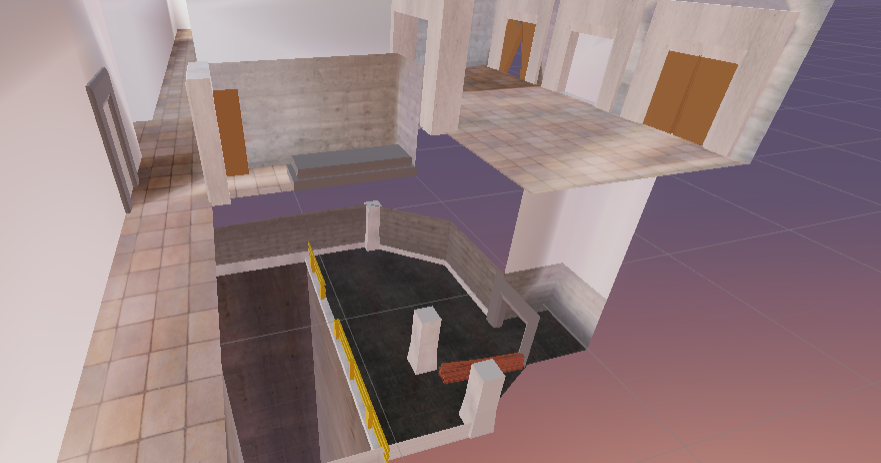

EcoSurv
EcoSurv is a VR puzzle game set in a dystopian future. In this future, safety standards have been significantly neglected. The player is in an ironworking factory, most of the machines the player has to operate are quite dangerous. The player has to solve unique and interesting puzzles while surviving the dangers of the factory and the machinery.
My Role In The Team
My role in this project, was to be the programmer. I was primarily responsible for implementing features in a game ready state for this project. It was quite challenging to work with vr and the logic, but after expirimenting with different things i managed to get the hang of it and use what i have learned in the project to make the game.